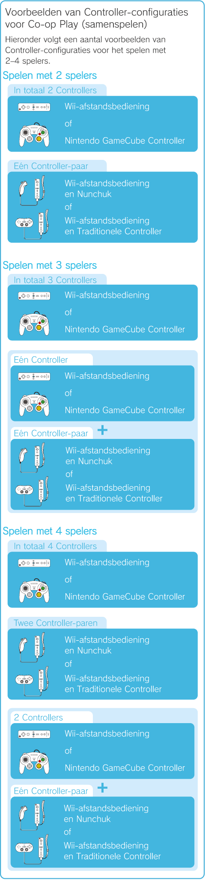
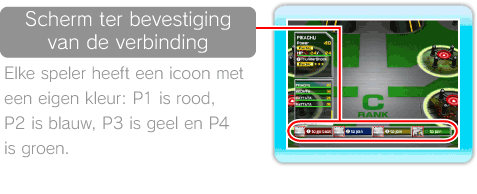
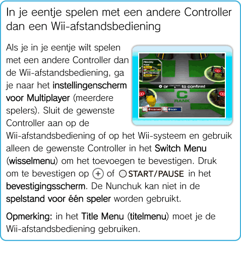

18 |
Faciliteiten voor Co-op Play (samenspelen) |
 |
|
Als je naar de faciliteit MULTIPLAYER (meerdere spelers) gaat in de Terminal of MULTIPLAYER selecteert in het Pause Menu (pauzemenu, zie pag. 16, Pause Menu (pauzemenu)), kun je meedoen aan Co-op Play (samenspelen). De instellingen voor Co-op Play (samenspelen) zijn in beide gevallen dezelfde.
MULTIPLAYER (meerdere spelers)
Er moet echter minstens één Pokémon en één Controller per speler zijn om samen te kunnen spelen. Zorg dat je, voor je samen gaat spelen, vriendschap hebt gesloten met Pokémon in de Stages (levels) of Pokémon hebt opgeslagen op een Wii-afstandsbediening met Wii REMOTE POKéMON (Pokémon op de Wii-afstandsbediening).
Informatie over Co-op Play (samenspelen): als je slechts één Wii-afstandsbediening hebt, kun je er een Nunchuk of een Traditionele Controller op aansluiten en in de spelstand voor 2 spelers spelen. Eén speler gebruikt dan de Wii-afstandsbediening en de ander de Nunchuk of Traditionele Controller.
 Co-op Play (samenspelen) beginnen Volg de onderstaande instructies om Co-op Play (samenspelen) in te stellen.
Ga naar de faciliteit MULTIPLAYER (meerdere spelers), druk op Registreer een Wii-afstandsbediening, sluit een Nunchuk of een Traditionele Controller op de Wii-afstandsbediening aan of sluit een Nintendo GameCube Controller aan op het Wii-systeem. Er verschijnt een bevestigingsscherm voor de Controller. Opmerking: als je een Nunchuk of een Traditionele Controller op de Wii-afstandsbediening aansluit, verschijnt er een scherm ter bevestiging van de verbinding. 
Het Switch Menu (wisselmenu) verschijnt voor elke speler. Selecteer met welke Pokémon je wilt spelen. Pokémon die door een andere speler zijn geselecteerd, kun je niet selecteren.
Wanneer alle spelers een Pokémon hebben geselecteerd, verschijnt er een bevestigingsbericht. Een speler die geen Nunchuk gebruikt moet op
Wanneer het instellen van Co-op Play (samenspelen) is voltooid, verschijnt de Pokémon van elke speler in de Terminal. Elke Pokémon is te herkennen aan het spelernummer in de bijbehorende kleur, zoals hierboven beschreven.
Co-op Play (samenspelen) afsluiten
Wanneer je vanuit Co-op Play (samenspelen) terug wilt naar de spelstand voor één speler, of wanneer een speler wil stoppen met Co-op Play (samenspelen), moeten de spelers die willen doorspelen, hun Pokémon selecteren vanuit de faciliteit MULTIPLAYER (meerdere spelers) of via de optie MULTIPLAYER (meerdere spelers) in het Pause Menu (pauzemenu). Spelers die willen stoppen met Co-op Play (samenspelen), moeten op de knop met de annuleerfunctie drukken (zie pag. 7, De Controller gebruiken) in het MULTIPLAYER Switch Menu (wisselmenu). Het Switch Menu (wisselmenu) wordt gesloten. Spelers die willen doorspelen, moeten een Pokémon selecteren en op
 Wii REMOTE POKéMON (Pokémon op de Wii-afstandsbediening)
Met deze faciliteit kun je je Pokémon op de Wii-afstandsbediening opslaan en gebruiken op het Wii-systeem van een vriend voor Co-op Play (samenspelen) of je vriend Pokémon geven door de Pokémon op je Wii-afstandsbediening naar zijn of haar Wii-systeem over te brengen. Pokémon die een limiet voor Power (kracht) hebben vanwege de Wonder Key (wondersleutel) kunnen niet worden overgebracht of teruggehaald. Je kunt maximaal 12 Pokémon naar de Wii-afstandsbediening overbrengen. Let op: als er andere gegevens op de Wii-afstandsbediening zijn opgeslagen (behalve Mii-personages), worden deze overschreven. Alleen Pokémon van Pokémon Rumble kunnen worden overgebracht naar en teruggehaald worden van de Wii-afstandsbediening. Let op: overgebrachte Pokémon verdwijnen van de Wii-afstandsbediening en uit het Wii-systeem.
Pokémon naar de Wii-afstandsbediening of naar het Wii-systeem overbrengen
Om een Pokémon naar de Wii-afstandsbediening over te brengen vanaf het Wii-systeem, selecteer je YES (ja) in de faciliteit Wii REMOTE POKéMON (Pokémon op de Wii-afstandsbediening) en druk je op Wanneer je Pokémon vanaf de Wii-afstandsbediening naar het Wii-systeem wilt overbrengen, selecteer je de Pokémon op de Wii-afstandsbediening (Pokémon gemarkeerd met een |
 en selecteer vervolgens YES (ja), of selecteer MULTIPLAYER (meerdere spelers) in het Pause Menu (pauzemenu).
en selecteer vervolgens YES (ja), of selecteer MULTIPLAYER (meerdere spelers) in het Pause Menu (pauzemenu). op de Nunchuk, op
op de Nunchuk, op  op de Traditionele Controller, of op op de GameCube Controller om het toevoegen van de Controller te bevestigen.
op de Traditionele Controller, of op op de GameCube Controller om het toevoegen van de Controller te bevestigen.
 of
of  ter bevestiging en breng de Pokémon over naar de Wii-afstandsbediening.
ter bevestiging en breng de Pokémon over naar de Wii-afstandsbediening.
 |
 |
 |